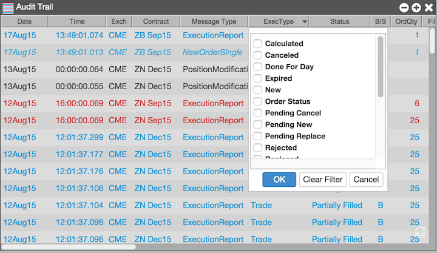

You can click the arrow next to the column name to access filters for the column values.

You can filter the list based on the following message types.
| Message type | Description |
|---|---|
| CancelReject | Indicates a request to cancel an order was rejected |
| CancelReplaceRequest | Acknowledges a request to change an existing order |
| CancelRequest | Acknowledges a request to cancel an order |
| CrossRequest | Indicates a request to submit a cross trade |
| CrossRequestResponse | Represents the completed cross trade |
| ExecutionReport | Provides order status information, such as order confirmations, fills, and order status updates |
| NewOrderSingle | Acknowledges a request for a new order |
| News | Represents alerts from TT or an exchange |
| PositionModification | Indicates a risk administrator modified your position with a manual fill or start-of-day record. |
| SecurityDefinition | Represents the details for an instrument |
| SecurityDefinitionRequest | Indicates a request to create a new instrument with an exchange |
| TradeCaptureReport | Represents the details of an OTC trade |
| TradeCaptureReportAck | Acknowledges a request to report an OTC trade |
You can filter the list based on the following execution types.
| Message type | Description |
|---|---|
| Calculated | Indicates a summary of the total amount done and the monetary components of a block-level trade |
| Canceled | Indicates a canceled order |
| Done For Day | Indicates a GTD order was canceled because the session ended |
| Expired | Indicates the order was canceled because its TIF passed |
| New | Indicates a new order entered into the market |
| Order Status | Indicates an execution report represents an order status update |
| Pending Cancel | Indicates an order cancel request is waiting to be processed |
| Pending New | Indicates a new order request is waiting to be processed |
| Pending Replace | Indicates an order cancel/replace request is waiting to be processed |
| Rejected | Indicates an order request was rejected |
| Replaced | Indicates an existing order was successfully replaced |
| Restated | Indicates that an unsolicited change to an order occurred |
| Stopped | Indicates an algo has been stopped |
| Suspended | Indicates an algo has been paused |
| Trade | Indicates a completed OTC trade |
| Trade Cancel | Indicates an OTC trade was canceled |
| Trade Clearing Hold | Indicates an OTC trade is being held until cleared |
| Trade Correct | Indicates an OTC correction to a previous trade |
| Trade Released To Clearing | Indicates an OTC trade was send to the clearing firm |
| Triggered or Activated | Indicates an algo or order trigger, such as a start time, occurred |